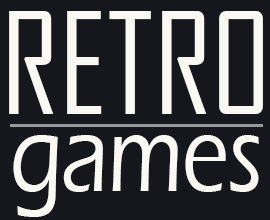

Список игр

О проекте

Вход/Регистрация
Погрузись в мир старых игр. Бей рекорды и соревнуйся с друзьями.
На сайте собранно большинство так всеми любимые старые игры.
Войдите в свой профиль или создайте новый, чтобы ваш прогресс не потерялся!
Первая игра в мире!
Самая первая компьютерная игра — дуэль двух космических кораблей — называлась Spacewar.
За пару месяцев в свободное от работы время ее создали несколько программистов из Массачусетского технологического института.
В январе 1962 они написали простую программу, а через месяц это была уже простенькая игра с двумя стреляющими друг в друга ракетами.
Spacewar работала на новом по тем временам компьютере PDP-1.
Его процессор выполнял 100 тысяч операций в секунду (современные, напомним, разгоняются до 2 миллиардов), а оперативной памяти у PDP-1 было 9 килобайт.
На круглый катодный дисплей выводилась карта боевых действий — фрагмент ночного неба, копирующий расположение звезд над Кембриджем.
Два противника с помощью клавиатуры или джойстика могли перемещать свои шаттлы и стрелять.
Боекомплект и количество топлива были ограничены.
Чтобы увернуться от выстрела, можно было крутануться вокруг звезды в центре карты, используя ее гравитацию, или совершить «гиперпрыжок» — корабль исчезал
и появлялся в случайном месте карты.
Spacewar стала и первой коммерческой игрой.
В 1971 году появилась ее аркадная версия Computer Space, которая, правда, успеха не имела.
Кроме того, за несколько месяцев до этого игровой автомат с другой модификацией Spacewar — Galaxy Game — был установлен в помещении стэнфордского
студенческого союза.
Galaxy Game пользовалась огромным успехом в течение шести лет, что позволило создателю автомата Биллу Питтсу вернуть вложенные в проект 60 тысяч долларов.
Сегодня его версия Spacewar в коллекции Computer Museum History Center в Маунтин Вью, Калифорния.
Интересно, что своим создателям Spacewar не принесла никакого дохода, кроме славы в узких программистских кругах.
«Единственные деньги, которые я заработал на Spacewar, это гонорары за консультации в судебных спорах 1970-х
годов, связанных с игровой индустрией», — утверждает один из создателей игры Алан Коток (Alan Kotok).
P.S. Речь идет о первой компьютерной игре, получившей широкое распространение.
Поскольку до этого создавались штучные игры на базе суперкомпьютеров,
такие как «OXO» (1952) и «Tennis for Two»(1958).